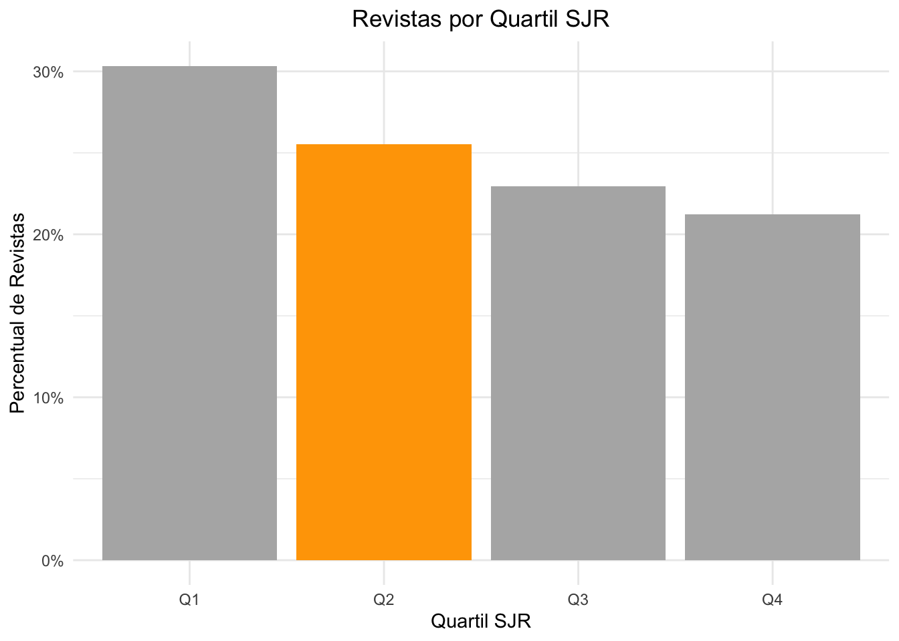
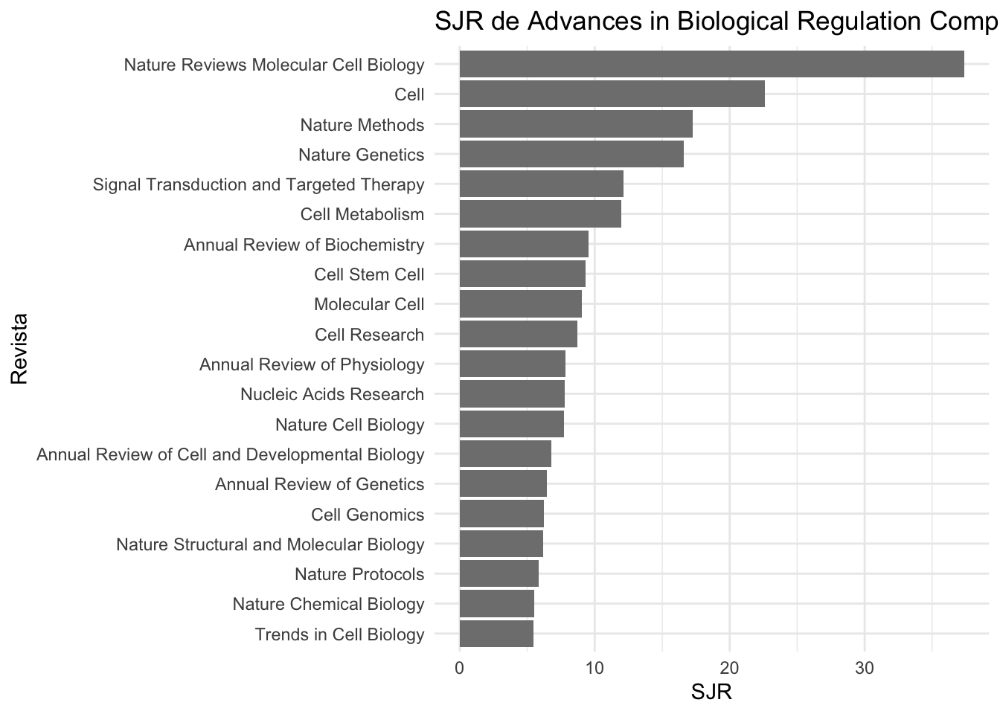

Modelos Animais em Pesquisa Biomédica - Replicação de Artigo Científico
R
Data Science
Ciências Biológicas
Biomedicina
Danio rerio
CRISPR
Projeto de replicação de replicação de experimento baseado no artigo https://doi.org/10.1016/j.jbior.2022.100945 em que usaremos um desfecho e uma variável para replicar o estudo com modificações de metdologia que fazer-se-ão necessárias na implementação da pesquisa. Para o experimento foi seleciado o desfecho comparativo de KO e controle de mutação do gene enthd2
# Número de animais que usaremos no estudo. Onde é n = 64 (do cálculo do tamanho amostral) x 2 grupos
prj_n <- 64 * 2
prj_groups <- c("KO", "WT")# fixamos o 2025 para ter reprodutibilidade. Em qualquer lugar que esse script rodar,
# irá produzir a mesma sequencia de amostra.
set.seed(2025)
# Vamos alocar cada ovo de Danio rerio em de forma randomizada entre os grupos KO e WT.
# Para isso, criamos uma sequencia
embryos <- paste0("embryo_", 1:prj_n)
# E vamos alocar os animais nos grupos pela sequencia descrita nesse algoritmo.
# Vamos separar entre WT e KO com (prj_n / 2) cada
group_WT <- sample(embryos, size = prj_n / 2)
# O grupo KO receberá os embrioes de embryos que não estão alocados no grupo WT
group_KO <- setdiff(embryos, group_WT)
# Vamos transformar isso em uma forma apresentável (via uma data.frame)
# KO=U
# WT=G
# A randomização aqui não tem efeito de cegamento, apenas alocação não enviesada de ovos por grupos
groups <- data.frame(
embryo = embryos,
group = ifelse(embryos %in% group_WT, "G", "U")
)
# E imprimimos o data.frame
groups embryo group
1 embryo_1 U
2 embryo_2 U
3 embryo_3 U
4 embryo_4 G
5 embryo_5 G
6 embryo_6 U
7 embryo_7 U
8 embryo_8 U
9 embryo_9 U
10 embryo_10 G
11 embryo_11 G
12 embryo_12 U
13 embryo_13 G
14 embryo_14 G
15 embryo_15 G
16 embryo_16 G
17 embryo_17 G
18 embryo_18 U
19 embryo_19 U
20 embryo_20 G
21 embryo_21 U
22 embryo_22 U
23 embryo_23 G
24 embryo_24 G
25 embryo_25 G
26 embryo_26 G
27 embryo_27 G
28 embryo_28 U
29 embryo_29 G
30 embryo_30 U
31 embryo_31 G
32 embryo_32 G
33 embryo_33 G
34 embryo_34 U
35 embryo_35 U
36 embryo_36 G
37 embryo_37 G
38 embryo_38 G
39 embryo_39 U
40 embryo_40 U
41 embryo_41 G
42 embryo_42 U
43 embryo_43 U
44 embryo_44 G
45 embryo_45 U
46 embryo_46 G
47 embryo_47 U
48 embryo_48 G
49 embryo_49 G
50 embryo_50 G
51 embryo_51 G
52 embryo_52 G
53 embryo_53 U
54 embryo_54 U
55 embryo_55 U
56 embryo_56 G
57 embryo_57 G
58 embryo_58 G
59 embryo_59 G
60 embryo_60 U
61 embryo_61 G
62 embryo_62 U
63 embryo_63 G
64 embryo_64 U
65 embryo_65 G
66 embryo_66 U
67 embryo_67 G
68 embryo_68 G
69 embryo_69 G
70 embryo_70 U
71 embryo_71 U
72 embryo_72 U
73 embryo_73 U
74 embryo_74 G
75 embryo_75 U
76 embryo_76 G
77 embryo_77 G
78 embryo_78 U
79 embryo_79 U
80 embryo_80 U
81 embryo_81 U
82 embryo_82 G
83 embryo_83 U
84 embryo_84 U
85 embryo_85 U
86 embryo_86 U
87 embryo_87 G
88 embryo_88 G
89 embryo_89 G
90 embryo_90 G
91 embryo_91 G
92 embryo_92 U
93 embryo_93 U
94 embryo_94 U
95 embryo_95 G
96 embryo_96 G
97 embryo_97 U
98 embryo_98 U
99 embryo_99 G
100 embryo_100 U
101 embryo_101 G
102 embryo_102 G
103 embryo_103 U
104 embryo_104 U
105 embryo_105 U
106 embryo_106 G
107 embryo_107 U
108 embryo_108 U
109 embryo_109 U
110 embryo_110 U
111 embryo_111 U
112 embryo_112 G
113 embryo_113 G
114 embryo_114 U
115 embryo_115 U
116 embryo_116 G
117 embryo_117 G
118 embryo_118 U
119 embryo_119 G
120 embryo_120 G
121 embryo_121 U
122 embryo_122 G
123 embryo_123 G
124 embryo_124 U
125 embryo_125 U
126 embryo_126 U
127 embryo_127 G
128 embryo_128 U# Valor de p no experimento original
p <- 0.057
# número de embriões em cada grupo
df <- 40
# O teste é bicaudal porque as autoras apenas medem se há diferença, não se é maior ou menor o controle.
t <- qt(p/2, df, lower.tail = FALSE) # teste bicaudal por isso o p / 2 (direito e esquerdo)
t[1] 1.959903# Estimando o tamanho de efeito a a partir dos dados do artigo.
# Usando a funcão t_to_d do pacote effectsize podemos calcular o tamamho de efeito
# e o intervalo de confiança.
effectsize::t_to_d(t, df = df)d | 95% CI
--------------------
0.62 | [-0.02, 1.25]# A coluna de interesse "SJR Best Quartile" tem caracteres complicados para lidar com R, entào
# vamos renomear para simplicar as análises seguintes
df_sjr <- read_csv2("https://www.scimagojr.com/journalrank.php?out=xls")
df_sjr <- df_sjr |>
rename(
best_quartile = `SJR Best Quartile`
)# Vamos criar um "data.frame" a partir de um filtro de busca no dataset.
# Os filtros serão por todas as revistas que apresentam classificação, ou seja
# a coluna, agora renomeada, best_quartile, não tenha NA e não seja igual a '-'
# contabilizamos por best_quartile e para mostrar em valores percentuais
# aplicamos uma operação de mutate para substituir o valor do count por
# frequencia relativa (n / sum(n)) de cada quartil.
quart_counts <- df_sjr |>
filter(!is.na(best_quartile), best_quartile != "-") |>
count(best_quartile) |>
mutate(freq = n / sum(n))
# Usamos o ggplot para criar o gráfico de colunas e aplicamos configurações
# no gráfico para colocar todas as colunas em cinza, mas a coluna Q2, que é
# a coluna de interesse ficar na cor laranja. Poderiamos usar qualquer cor
# inclusive em códigos RGB, mas para simplificar, vamos usar nomes das cores no R
# e temos: Q2 em laranja e todas as demais em cinza a 70%
# No ggplot2, usamos a função aes (de aesthetics) para formatar o gráfico. Com aesthetics,
# iremos de fato 'formatar' o gráfico. Por exemplo: do dataset, qual coluna usaremos para
# o eixo x, e qual o eixo y. E assim temos: x = best_quartile (se não tivesse renomeado, seria
# só com "escapes" para usar o nome), em y usaremos a coluna freq (criada na função mutate).
# E dizemos mais: fill (preencher), iremos preencher apenas a coluna best_quartile onde o label for Q2
# Mas para que as colunas fiquem com uma cor, usaremos o modificador scale_fill_manual() com apenas
# duas cores, pois a Q2 o ggplot irá colorir, as demais serão na cor "nao selecionada" no caso gray70
ggplot(quart_counts, aes(x = best_quartile, y = freq, fill = best_quartile == "Q2")) +
geom_col() + # gráfico de barras (col=column)
scale_y_continuous(labels = scales::percent_format()) + # vamos formar o eixy Y para valores em percentuais
scale_fill_manual(values = c("grey70", "orange")) + # aqui dizemos qual cor para as colunas
labs(
title = "Revistas por Quartil SJR",
x = "Quartil SJR",
y = "Percentual de Revistas"
) +
theme_minimal() + # auto explicativo
theme(plot.title = element_text(hjust = 0.5)) + #aqui ajustamos o titulo para ficar centralizado
theme(legend.position = "none") # não queremos legenda no gráfico
